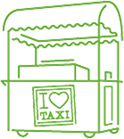

Our Story
In 2001, Shake Shack sprouted from a hot dog cart in Madison Square Park in Manhattan to support the Madison Square Park Conservancy’s first art installation. After three summers of Shack fans lining up daily, a permanent kiosk opened in the park: Shake Shack was truly born as a modern day “roadside” burger stand serving up the most delicious burgers, hot dogs, frozen custard, shakes, beer, wine and more.
In 2013, Shake Shack landed in London and opened in iconic Covent Garden. Since crossing the pond, Shake Shack has stayed true to its NYC roots while delighting UK Shack fans by serving up the classics made from simple, high quality ingredients.
The rest, as they say, is burger history.


DIY ShackBurger® Kit
We’ve teamed up exclusively with Plateaway to offer the Shack Shake Shackburger Kit, available for delivery nationwide.
You can cook and enjoy our signature ShackBurger, using all the same ingredients we do, within the comfort of your own home.
Kits Include:4 fresh patties of our custom beef blend: 100% all-natural Aberdeen Angus beef.
4 slices of American cheese.
4 potatoe buns.
40g of Shake Shack’s custom ShackSauce.
Salt and pepper blend.
Lettuce + tomatoe.
Step-by-step cooking instructions from our culinary team.

Order For Pick Up
Save time and order ahead!
Pick your Shack Check to see if your local Shack is taking online orders. If you spot it, order away!
Browse the menu + check out. Select the time you want to pick your order up
Grab the goods! Head to the “Pick-Up” counter and let a team member know you’re picking up an online order